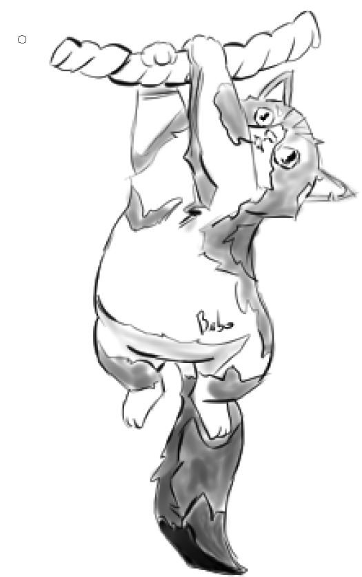
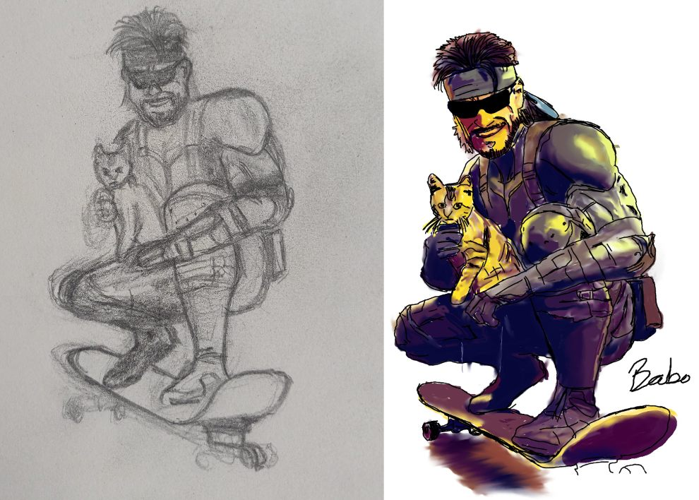
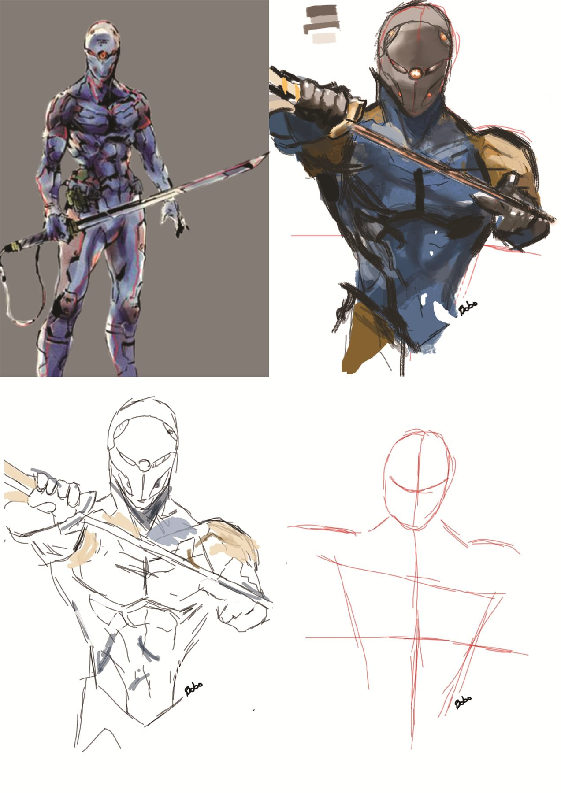
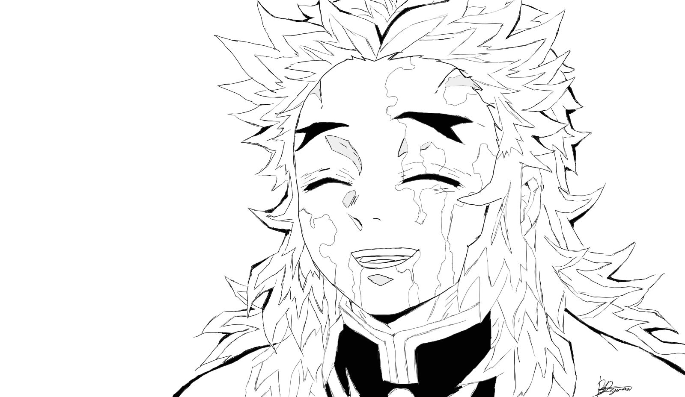
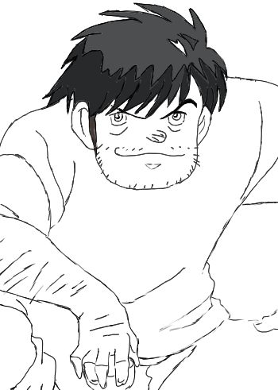
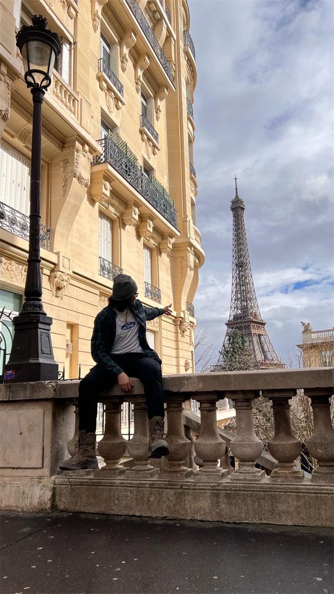

Merhaba, ben Barış. Hi, I’m Barış.
Ankara’da yaşıyorum. Mobil uygulama arayüzleri tasarlıyorum, Unity’de oyun yapıyorum ve fırsat buldukça çiziyorum. Hacettepe’de Bilgisayar ve Öğretim Teknolojileri Eğitimi okudum; şu an E12’de dijital öğrenme içerikleri hazırlıyorum.
I live in Ankara. I design mobile app interfaces, make games in Unity, and draw whenever I can. I studied Computer Education and Instructional Technology at Hacettepe, and I currently make digital learning content at E12.

İşlerWork
birine tıkla, detayları açılır click one for the details

DefterdenFrom the sketchbook
çoğu iş burada başlıyor most things start here






Basılı işler ve yazılarPrint & writing
hepsi PDF olarak açılırall open as PDFs
- katalogcatalog Vitaself Matbaaya hazır, çok dilli ürün kataloğu (Kiril alfabesiyle). Print-ready multilingual product catalog, set in Cyrillic.
- katalogcatalog Hacettepe Akademik Gelişim ProgramıHacettepe Academic Development Programme Çok sayfalı eğitim kataloğu, 2024. Multi-page course catalog, 2024.
- raporlarreports Hacettepe STL dönem faaliyet raporlarıHacettepe STL semester reports Dört dönem üst üste tasarladım: I designed four semesters in a row: Güz 2022Fall 2022 Bahar 2023Spring 2023 Güz 2023Fall 2023 Bahar 2024Spring 2024
- senaryoscreenplay Senaryo örnekleriScreenwriting samples Kendi yazdığım sahneler. Scenes I wrote.
- kısa senaryoshort script Visa Vize bürokrasisi üzerine kısa bir senaryo. A short script about visa bureaucracy.
HakkımdaAbout

Hacettepe’de Bilgisayar ve Öğretim Teknolojileri Eğitimi okudum (2021–2025). Bölüm bana bir arayüzü tasarlarken onu kullanacak kişinin onu nasıl öğreneceğini de düşünmeyi öğretti; yaptığım işlerin çoğu bu yüzden ya bir şey öğretiyor ya da kolay öğrenilmeye çalışıyor.
I studied Computer Education and Instructional Technology at Hacettepe (2021–2025). It taught me to think about how someone will learn an interface while I’m designing it, so most of my work either teaches something or tries hard to be easy to learn.
Son zamanlarda LLM araçlarını ve yapay zekâyla video üretimini de iş akışıma katmaya çalışıyorum; özellikle senaryodan storyboard’a, oradan videoya giden kısımda.
Lately I’ve been bringing LLM tools and AI video generation into my workflow, mostly for the path from script to storyboard to video.
KullandıklarımWhat I use
- ArayüzInterface
- Figma, Adobe XD, HTML/CSS/JS
- Oyun ve 3DGames & 3D
- Unity, C#, Blender, Git
- Grafik ve baskıGraphics & print
- Illustrator, Photoshop, InDesign, Premiere Pro
- EğitimLearning
- Articulate Storyline, SCORM, S1000D, Python
Nerelerde çalıştımWhere I’ve worked
- 2025 – şimdi2025 – now E12 İçerik geliştirme uzmanı. LGS ve YKS için Articulate Storyline 360 ile etkileşimli e-öğrenme modülleri; senaryo ve storyboard’da üretken yapay zekâ; ders çekimlerinde stüdyo ve kamera. Content development specialist. Interactive e-learning modules for the LGS and YKS curricula in Articulate Storyline 360; generative AI for scripts and storyboards; studio and camera for lesson recordings.
- 2024 – 2025 BİLTEN Önce stajyer (2024 yazı), sonra yarı zamanlı öğretim tasarımcısı. Eğitim videoları, S1000D uyumlu teknik dokümantasyon, eğitimlerde video çekimi ve kurumsal blog yazıları. Intern (summer 2024), then part-time instructional designer. Training videos, S1000D technical documentation, on-site video production and posts for the company blog.
- 2022 – 2024 Hacettepe STL Yarı zamanlı grafik ve yayın tasarımcısı. Dönem raporları ve AGP kataloğu. Part-time graphic & publication designer. Semester reports and the AGP catalog.
- 2022 – 2023 Google Oyun ve Uygulama AkademisiGoogle Game & Application Academy Unity ile ekip halinde 2D/3D oyun prototipleri. Team-built 2D/3D game prototypes in Unity.
- 2022 – 2023 Hacettepe Kutu Oyunu Topluluğu (Knights)Hacettepe Board Game Club (Knights) Başkan. Turnuvalar düzenledim, kulübün görsel kimliğini tasarladım. President. Ran tournaments and designed the club’s visual identity.
Sertifikalar ve eğitimlerCertificates & training
-
2023
Google Project Management
Google, Coursera üzerinden · 6 kurs sertifikasıGoogle, via Coursera · 6 course certificates
- Proje Yönetiminin TemelleriFoundations of Project Management
- Projeyi BaşlatmaProject Initiation
- Proje PlanlamasıProject Planning
- Projeyi YürütmeProject Execution
- Çevik Proje YönetimiAgile Project Management
- Bitirme Projesi: Gerçek Dünyada Proje YönetimiCapstone: Applying Project Management in the Real World
- 2023 Oyun ve Uygulama AkademisiGame & Application Academy Google, Girişimcilik Vakfı ve T3 Girişim Merkezi programıA programme by Google, Girişimcilik Vakfı and T3 Girişim Merkezi
- Udemy Tasarım, video ve kodDesign, video & code 7 kurs, yaklaşık 150 saat7 courses, about 150 hours
- Anthropic Yapay zekâ okuryazarlığı ve ClaudeAI fluency & Claude 5 tamamlama sertifikası5 certificates of completion
- 2024 Drawing to Discuss Gençlik değişimi, Châtenay-sur-Seine, Fransa. Sanat ve sözsüz iletişim atölyeleri.Youth exchange, Châtenay-sur-Seine, France. Art and non-verbal communication workshops.
Bana yazWrite to me
Arayüz, oyun ve eğitim teknolojileri alanlarındaki işlere açığım. Ankara’dayım, uzaktan da çalışabilirim.
I’m open to work in interface design, games and learning technology. I’m based in Ankara and happy to work remotely.